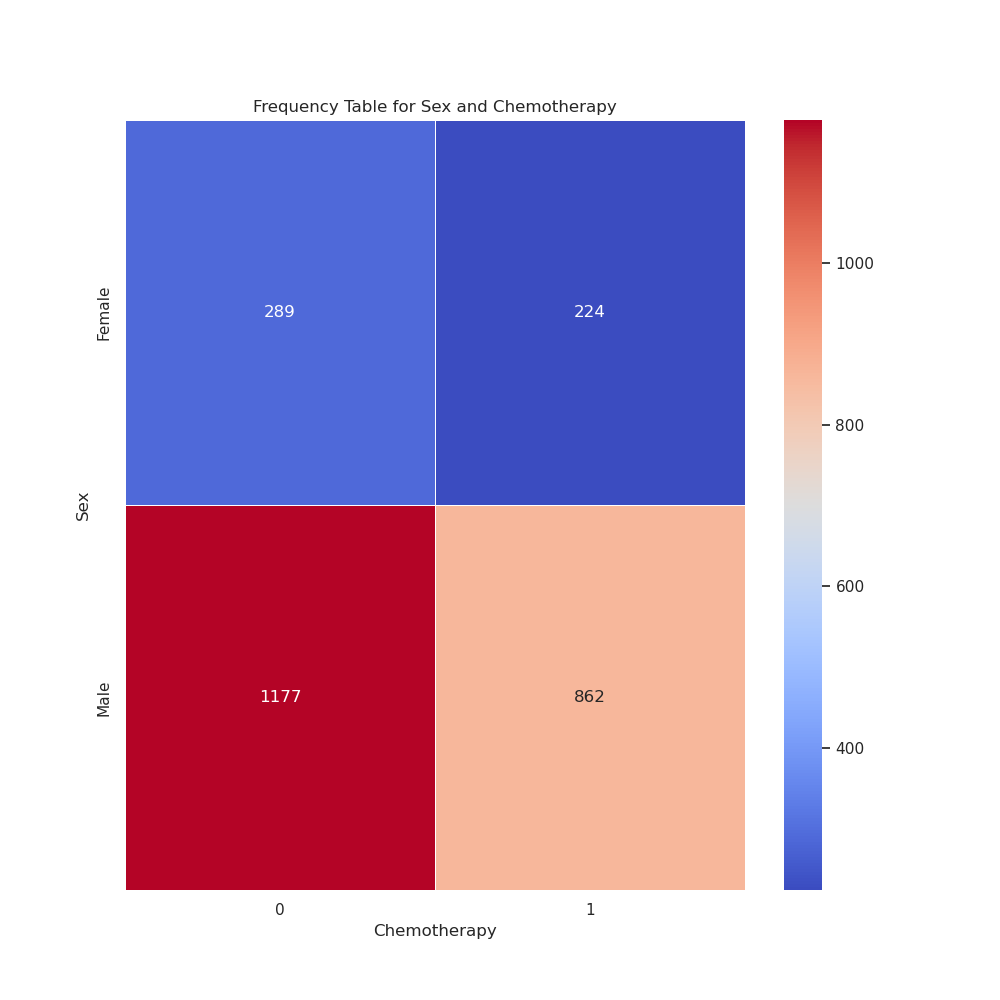
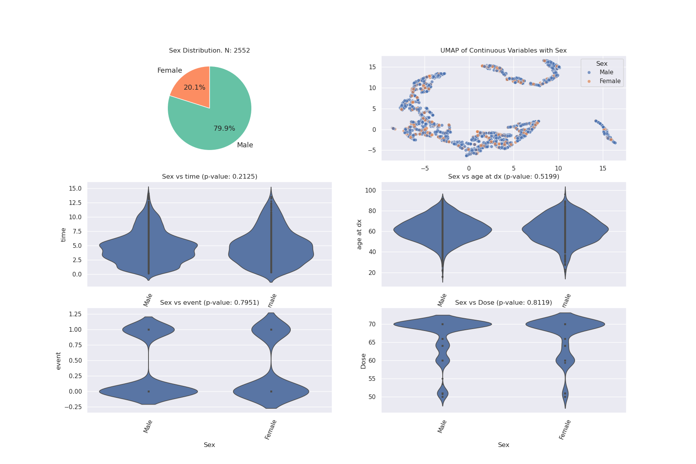
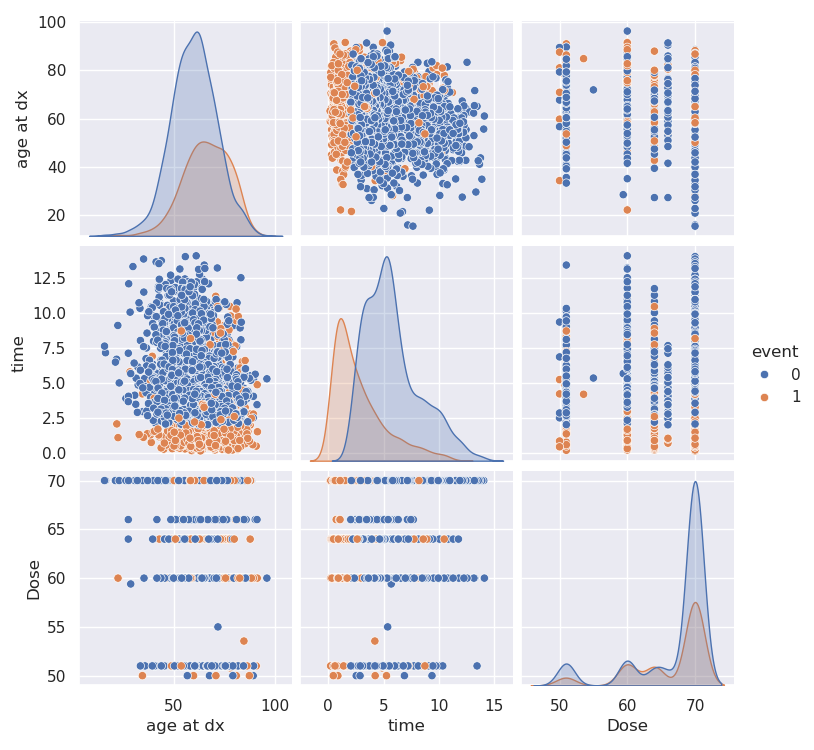
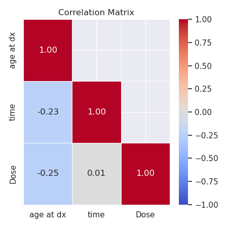
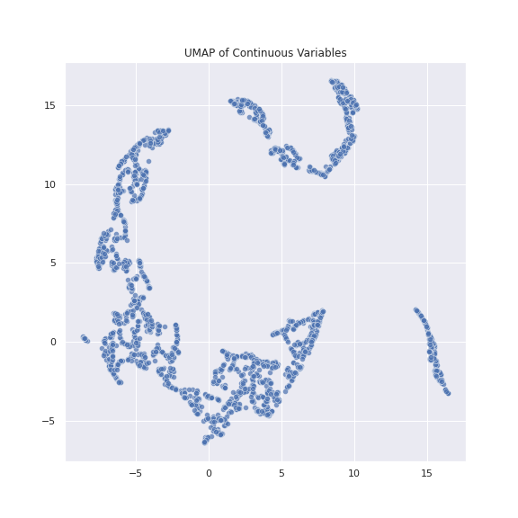

Analyzer
The Analyzer module is designed for data visualization and exploration. It helps to gain insights into the data, identify patterns, and assess relationships between different features, which is essential for building effective models.
Example Usage
from jarvais.analyzer import Analyzer
analyzer = Analyzer(data, target_variable='target', output_dir='.')
analyzer.run()
Example Output
Feature Types:
- Categorical: ['Gender', 'Disease Type', 'Treatment']
- Continuous: ['Age', 'Tumor Size']
Outlier Detection:
- Outliers found in Gender: ['Male: 5 out of 1000']
- Outliers found in Disease Type: ['Lung Cancer: 10 out of 1000']
- No Outliers found in Treatment
- Outliers found in Tumor Size: ['12.5: 2 out of 1000']
TableOne(Data Summary)
| Category | Missing | Overall | |
|---|---|---|---|
| n | 1000 | ||
| Age, mean (SD) | 0 | 58.2 (12.3) | |
| Tumor Size, mean (SD) | 0 | 4.5 (1.2) | |
| Gender, n (%) | Female | 520 (52%) | |
| Male | 480 (48%) | ||
| Disease Type, n (%) | Breast Cancer | 300 (30%) | |
| Lung Cancer | 150 (15%) | ||
| Prostate Cancer | 100 (10%) |
Output Files
The Analyzer module generates the following files and directories:
- analysis_report.pdf: A PDF report summarizing the analysis results.
- config.yaml: Configuration file for the analysis setup.
- tableone.csv: CSV file containing summary statistics for the dataset.
- updated_data.csv: CSV file with the cleaned and processed data.
Figures
1. Frequency Tables
Visualizations comparing different categorical features.

2. Multi-plots
Visualizations showing combinations of features for deeper analysis.

Additional Figures
1. Pairplot
Pairwise relationships between continuous variables.

2. Pearson Correlation Matrix
A heatmap visualizing Pearson correlations between variables.
3. Spearman Correlation Matrix
A heatmap visualizing Spearman correlations between variables.

4. UMAP of Continuous Data
UMAP visualization of continuous data.

5. Kaplan Meier Curve (Survival)
Kaplan Meier Curves for all categorical variables. An option exclusive to survival data.